CS184/284A Spring 2025 Homework 1 Write-Up
Link to webpage: hw-webpages-yuhe-henry-webpage
Link to GitHub repository: hw-rasterizer-yuhe-henry
Overview
We worked together to build a simple rasterization pipeline to render many vertices and textures into computer-based works of art.Task 1: Drawing Single-Color Triangles
To rasterize triangles we do the following steps:
- First, we need to calculate if the traversal of p0 -> p1 -> p2 is clockwise or counterclockwise. We do this by calculating the cross product of A (p1 - p0) and B(p2 - p0) and seeing if it is greater than 0. If so, then the order provided is naturally is counterclockwise. If not, then either we have the cross product = 0 (which would be a line and not a triangle), or we have cross product < 0. In this case, then we have to swap x0 and x2 which is the equivalent of reading the triangle in the reverse way (i.e. reversing a clockwise ordering is traversing counterclockwise which is what we want).
- Then we build the rectangular bounding box of pixels that could potentially be in the triangle. To do this we need to see what the leftmost, rightmost, topmost, and bottommost x and y values are that are present in the vertices. We know that nothing outside of this bounding box could possibly be in the triangle. Anything inside of this bounding box could, in theory, be a part of the triangle that we are trying to rasterize.
- Lastly, we loop through the bounding box and perform the 3 line tests at the center point of each pixel (represented as base_x + 0.5 and base_y + 0.5). We only call the fill_pixel method if all three line tests pass (and made sure that a line test passes if said line test returns zero, indicating that a point is right on the line), and therefore we know that said pixel's center is inside or on the triangle.
We implemented the bounding box technique so we are as fast as said technique. We identified the leftmost x (lowest value), rightmost x (highest value), top y (lowest value), bottom y (highest value) and used these points to define a square that we needed to evaluate inside of. Everything outside of this square cannot have their pixel values filled as they are guaranteed fall outside of the range of the triangle. One caveat is that we use the floordiv method to transform the bounding box into pixel indices instead of a raw float bounding box. We then used
<= as the operator in the box iteration instead of < so we could capture the
highest valid x,y values.
Here are two images created by implementing task 1:
|
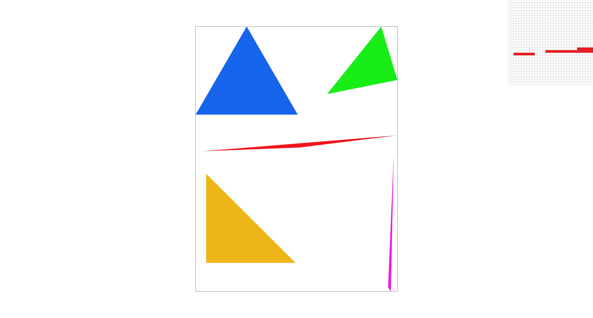
|
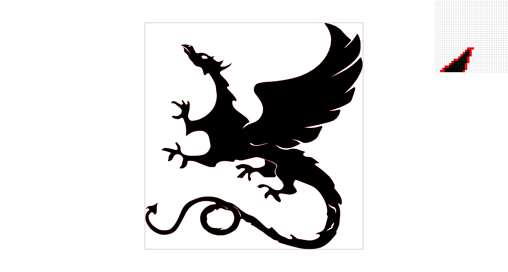
|
Task 2: Antialiasing by Supersampling
To implement supersampling we did the following steps:
- We first had to update the sample buffer to make it much larger so that it could hold all of our
supersamples
for each pixel. We realized that every increment of x actually incremented the whole data structure by the
number of supersamples. Therefore, indexing this large array was
(y * num_columns + x) * num_super_samples. - After we figured out the data structure, we needed to update the set_sample_rate and set_framebuffer_target functions so that they would write out the correct sized sample buffer.
- There was one edge case with the fill_pixel function that we had to solve for as well. This function already assumes that we want a specific color value at a given pixel. In order to make this work with our downsampling further in the pipeline, we needed to set all of the supersample values for a given pixel to be the chosen color. Therefore, when you average the supersamples together, you arrive at the chosen color (since they all have the same value).
- Next up was the core rasterize triangle method. Essentially we needed to divide the pixel box into an even
number of squares to fit the number of supersamples. This effectively created a grid of identical squares
inside of
each pixel with the
square_root(super_sample)number of columns and rows. We needed to index each supersample square and run the triangle test at the center of said sub-pixel. We then write out each sub-pixel value to the sample buffer if it lies in the triangle that we are sampling. If the sub-pixel is not in the triangle, then we do not write out its value, as white (the default color) is already in the sample buffer. - Lastly we needed to add downsampling functionality in the resolve_to_framebuffer method. In this method we iterated over each of the supersampled values for each pixel and averaged them together to create a final color that was the average of each supersampled pixel. We only wrote out the final averaged value to the rgb_buffer_target.
Supersampling is useful as it lets us get more information as per a pixels true value. When we only sample one point in the center of the pixel, we lose a lot of information on whether the other points spanned by the pixel are included in the triangle or not. This can lead to aliasing which includes Moire Patterns and jaggies. Supersampling is helpful as it allows us to better approximate a pixel's true coverage. It also acts as a convolution and blurs sub-pixel level features that often cause aliasing.
As described above, our main tweaks were to change the sample buffer data structure to enlarge it to contain the supersampled pixel values. We also had to write out said supersampled values in the rasterize triangle method and had to update the framebuffer resolution method to allow for downsampling when sending to be rgb_buffer.
After implementing supersampling, we were able to antialias our triangles by increasing the supersampling rate. As the rate increased, the averaged value of the pixel became a better approximation of the continuous triangle value. In other words, as we increased the supersample rate, we better approximated a 1<>1 pixel convolution to blur out aliasing artifacts. You can see in each of these images below that as the supersample rate increases the image becomes clearer and contains fewer aliasing artifacts.
Here are four images created by implementing task 2:
|
|
|
|
|
|
Task 3: Transforms
After implementing the transformation code, we were able to show my_robot diving head first into a swimming pool:

|
Extra Credit
|
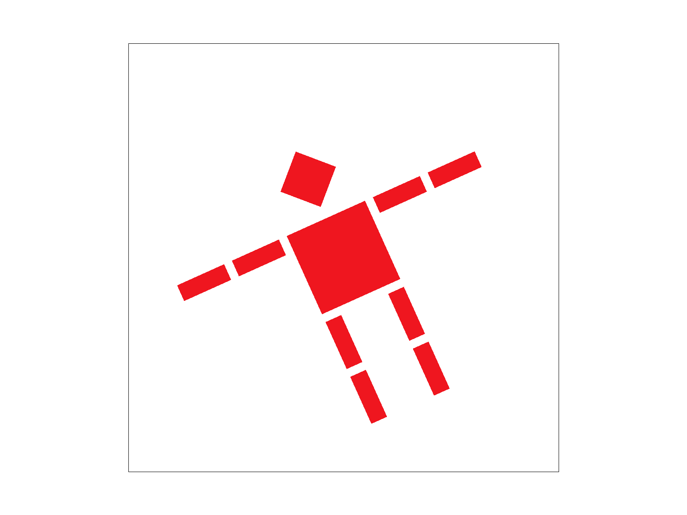
|
Task 4: Barycentric coordinates
After learning about barycentric coordinates, we visualized how a triangle can smoothly blend colors at each vertex using this coordinate system.
This image shows a triangle with red, green, and blue vertices. The interior colors are smoothly interpolated using barycentric coordinates.
|
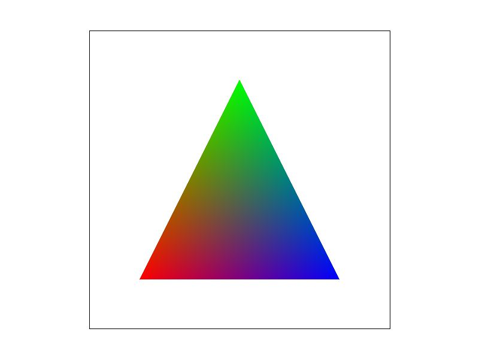
|
Barycentric coordinates are a way to describe the position of a point inside a triangle by expressing it as a weighted combination of the triangle's three vertices.
Each point inside the triangle is assigned three weights (usually called α, β, and γ), which tell us how close the point is to each of the triangle's corners. These weights always add up to 1.
For example:
- If a point is exactly at vertex A, then its barycentric coordinates are (1, 0, 0).
- If it's in the center of the triangle, the coordinates would be about (⅓, ⅓, ⅓).
- If it lies on the edge between two vertices, one of the weights will be 0.
This is very useful in computer graphics because we can use these weights to smoothly interpolate values-like color, texture, or lighting-across the triangle.
|
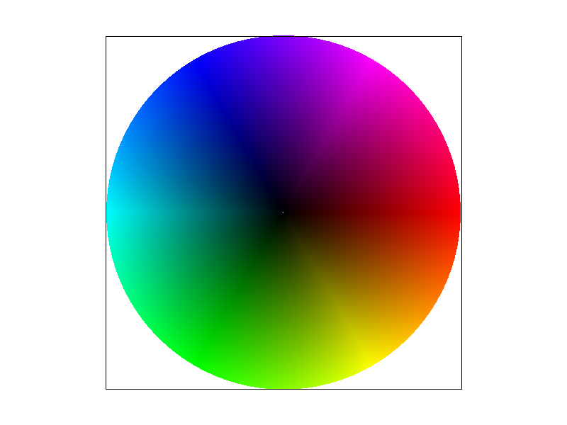
|
Task 5: "Pixel sampling" for texture mapping
Explanation
Pixel sampling is the process of determining the final color of a pixel on screen by looking up color data from a texture image. In texture mapping, screen-space triangles are mapped to texture-space coordinates, and pixel sampling helps decide which color from the texture should be used at each pixel.
How we implemented it to perform texture mapping
To implement pixel sampling for texture mapping, we updated the rasterize_textured_triangle function
to compute barycentric coordinates for each pixel covered by the triangle.
For every pixel center (x + 0.5, y + 0.5), we calculated the barycentric weights (α, β, γ) and used
them to interpolate the UV coordinates from the triangle's vertices.
To prepare for proper texture sampling, we also computed the UV coordinates at neighboring positions (x +
1, y) and (x, y + 1),
which allowed us to estimate the partial derivatives ∂u/∂x, ∂v/∂x, ∂u/∂y,
and ∂v/∂y.
These are passed into the SampleParams struct, along with the current UV and the selected pixel and
level sampling modes (psm and lsm), which the GUI can toggle.
Then we passed the SampleParams to the tex.sample() function. Inside the texture class,
we implemented both nearest-neighbor and bilinear sampling:
- Nearest Sampling: In
sample_nearest, we multiplied the UV coordinates by the mip level's texture size and clamped them to the texture boundaries before retrieving the nearest texel. - Bilinear Sampling: In
sample_bilinear, we calculated the four surrounding texels and used bilinear interpolation based on the fractional parts of the scaled UVs.
This setup allows flexible switching between sampling modes and supports antialiasing via mipmap level
selection, which we handle in later parts of the assignment (e.g., implementing get_level and L_LINEAR
interpolation).
Sampling Methods
- Nearest Sampling: Rounds (u, v) to the nearest integer texel location and returns the corresponding texel color. It's fast but often results in blocky, pixelated artifacts.
- Bilinear Sampling: Interpolates between the four surrounding texels. Produces smooth color transitions and reduces aliasing at the cost of slightly more computation.
Screenshots & Comparison
Capture screenshots with:
|
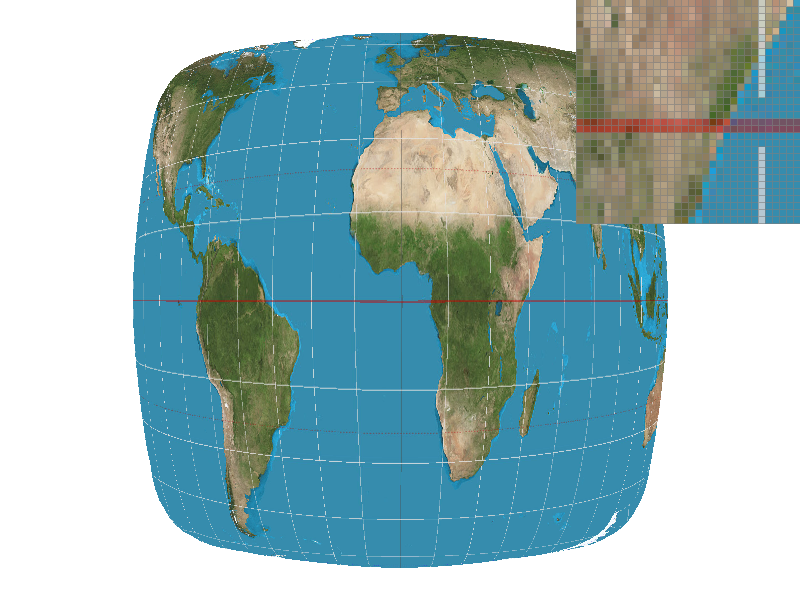
|
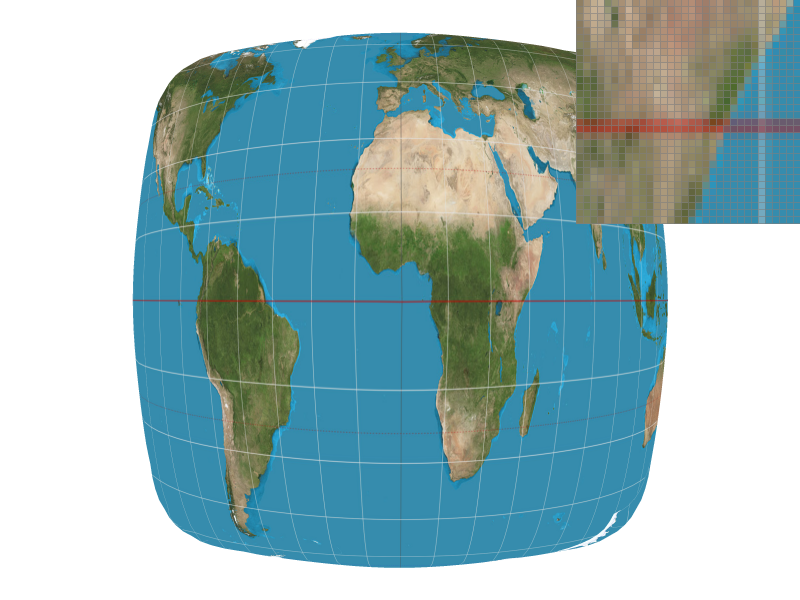
|
|
|
|
Comments on Differences
- Nearest @ 1 spp: Blocky artifacts and jagged transitions. Worst quality.
- Nearest @ 16 spp: Much better due to geometric supersampling, but texture remains blocky.
- Bilinear @ 1 spp: Smoother transitions; texture appears less pixelated even with one sample.
- Bilinear @ 16 spp: Best overall-smooth texture and anti-aliased edges.
When Differences Are Significant
Bilinear sampling performs significantly better when:
- The texture contains high-frequency detail (e.g., fine patterns or text).
- The texture is magnified or heavily transformed (rotated, skewed).
This is because nearest sampling may pick discontinuous texel values, resulting in visible artifacts, while bilinear blends neighboring texels to produce a more consistent appearance.
Task 6: "Level Sampling" with mipmaps for texture mapping
Explanation
Level sampling is the process of choosing which mipmap level to use when looking up a texture during rendering. Mipmaps are precomputed, downscaled versions of a texture that help improve performance and reduce aliasing when the texture is viewed at smaller sizes on screen.
Instead of always sampling from the original high-resolution texture (level 0), we select a lower-resolution mipmap level depending on how much the texture is being minified. This helps prevent visual artifacts such as shimmering and moire patterns.
How we implemented it
To implement level sampling, we modified the rasterize_textured_triangle function
to compute screen-space derivatives of the texture coordinates. For each pixel inside the triangle, we calculated
the interpolated (u, v) using barycentric coordinates.
To estimate texture coordinate changes, we computed the coordinates at neighboring points: (x+1, y)
and (x, y+1). These were used to generate p_dx_uv and p_dy_uv. We then
filled the SampleParams struct with the current coordinates and their derivatives, and passed it to
tex.sample(sp).
Inside Texture::sample, we handled three level sampling modes:
- L_ZERO: Always samples from MipLevel 0, regardless of scale.
- L_NEAREST: Computes the appropriate mipmap level using
get_level, rounds it to the nearest integer, and samples from that level. - L_LINEAR: Performs trilinear sampling by computing two mip levels (floor and ceil of the computed level), sampling from both, and linearly blending the results based on the fractional level.
In get_level, we computed the norm of the derivatives in UV space, scaled them by the base level's
width and height, and used log2 of the maximum value to estimate the mipmap level. We clamped the
result to ensure it remains non-negative.
This implementation helps reduce aliasing when textures are minified and provides smoother transitions between mipmap levels.
Tradeoffs Between Speed, Memory Usage, and Antialiasing Power
In texture mapping and image filtering, various techniques are used to balance performance, memory, and image quality. The table below compares six such techniques:
| Technique | Speed | Memory Usage | Antialiasing Power |
|---|---|---|---|
| Pixel Sampling (Nearest / Bilinear) | Very fast | Low | Low to Moderate |
| Level Sampling (L_ZERO / L_NEAREST / L_LINEAR) | Fast (L_ZERO) to Moderate (L_LINEAR) | Moderate (due to mipmaps) | Moderate to High |
| Anisotropic Filtering | Slower than mipmaps and bilinear filtering | Higher (requires directional sampling) | Very High (especially for oblique surfaces) |
| Summed Area Tables (SATs) | Fast lookup after preprocessing | High (stores summed values for every texel) | Very High (precise rectangular averaging) |
| Trilinear Filtering | Moderate | Moderate (uses two mip levels) | High (smoother LOD transitions) |
Each technique serves a different purpose depending on the texture distortion, viewing angle, and performance requirements. For example, anisotropic filtering is ideal for extreme angles, while summed area tables are powerful for large blur kernels and rectangular averaging.
Screenshots & Comparison
These 8 images demonstrate the visual results of different combinations of pixel sampling and level sampling strategies:
Capture screenshots with:
|
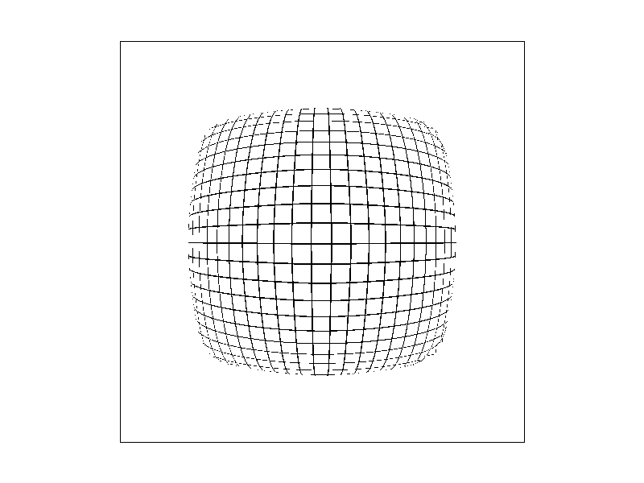
|
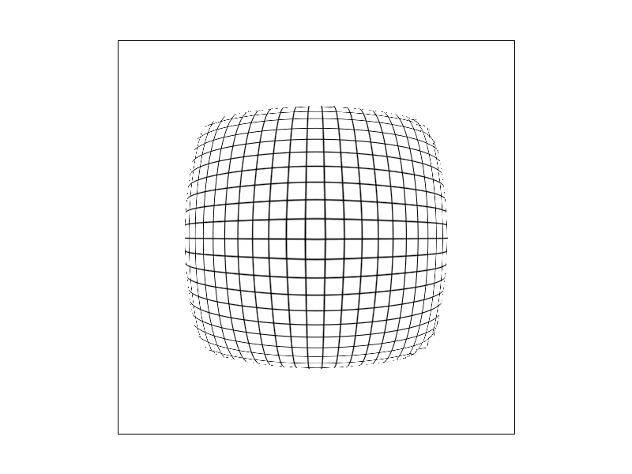
|

|

|
|
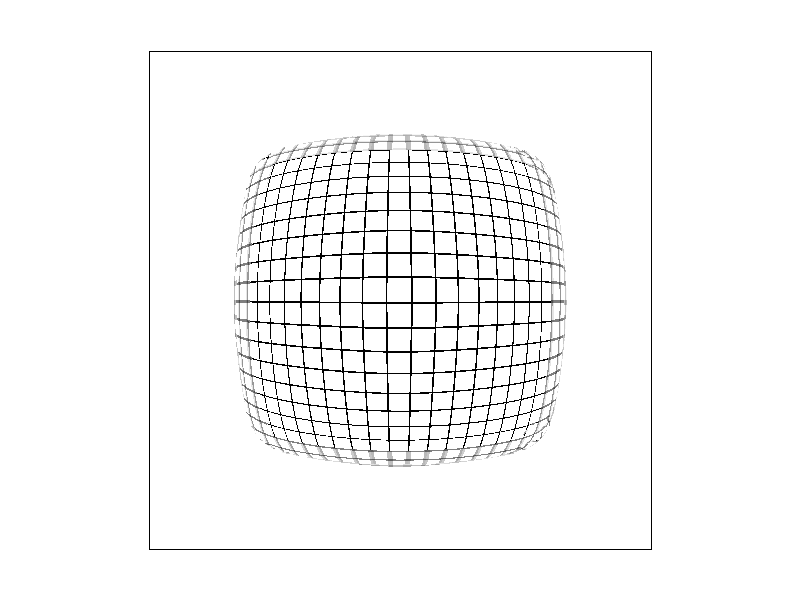
|
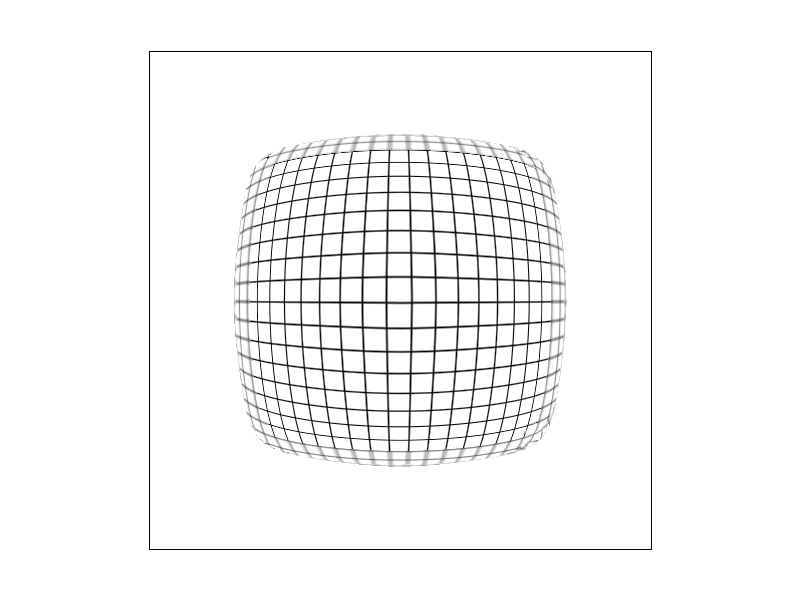
|
|
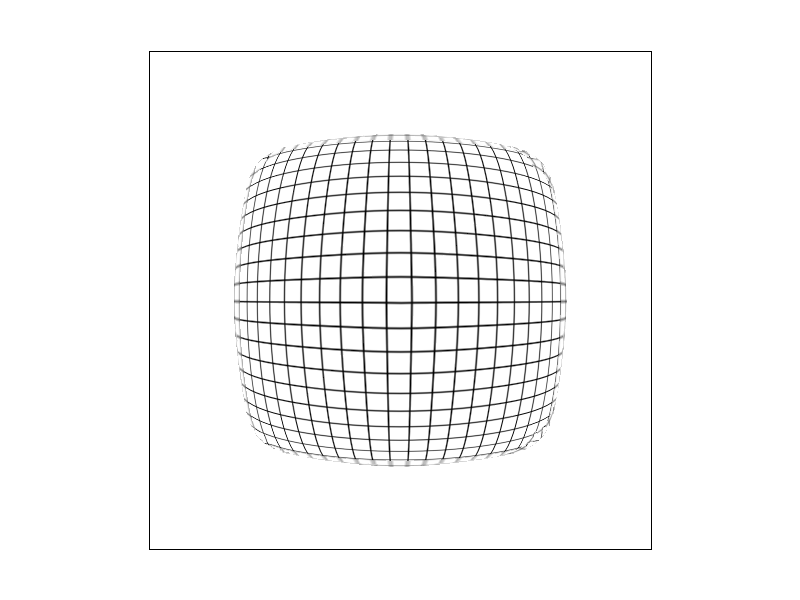
|
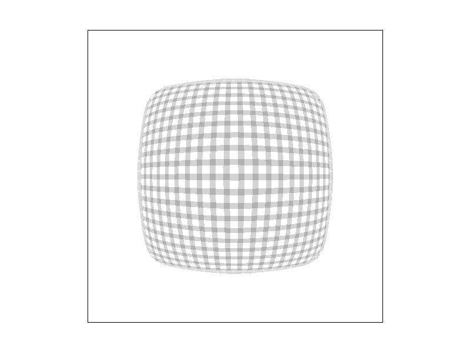
|
Extra Credit
We implemented anisotropic filtering or summed area tables.